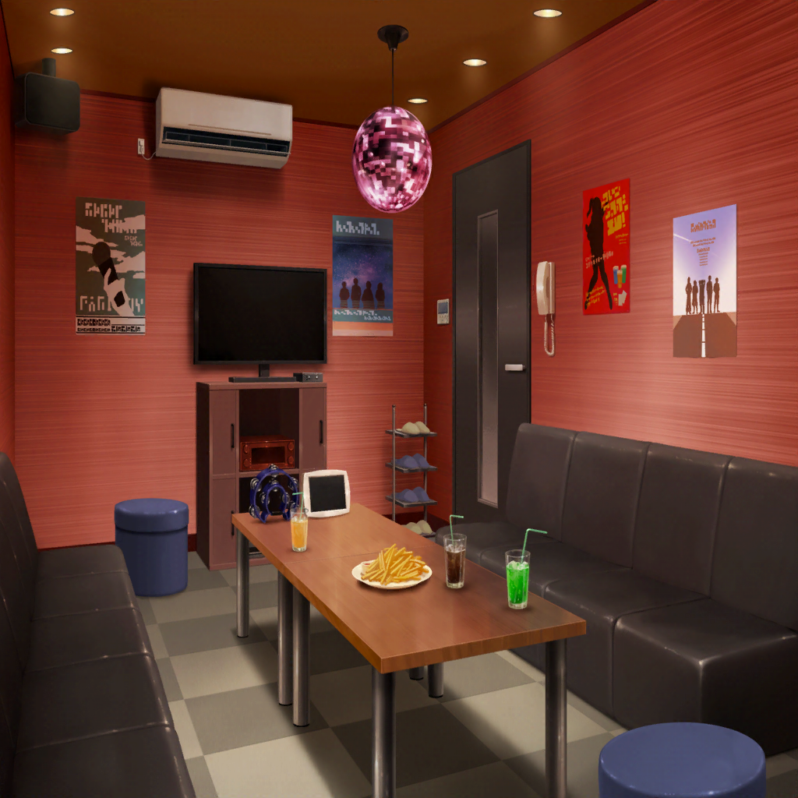

午後４時３０分
ショッピングモール
香澄
はぁ～、ホント大満足って感じ！
お腹いっぱ～い！
たえ
ここのハンバーグすっごい美味しかったよ！
次に来たときは、一番大きいやつにしよう！
沙綾
でも、かなりのボリュームだったよね？
写真より大きく感じなかった！？
香澄
やっぱり思った！？
私も実物見てビックリしちゃった！
おたえの顔くらいあったんじゃない？ あのハンバーグ
有咲
それは言い過ぎだろ？
つーか、私が一番ビックリしたのは、りみだな
りみ
え？ どうして？
有咲
ステーキ食べたあと、結局チョコレートパフェも食べてたし。
よくあんなに食べられるよな？
たえ
甘いものとお肉は別腹だもんね
有咲
なんだその、別腹に対する絶大な信頼は？
りみ
それに、香澄ちゃんがホントに美味しそうに食べるんだもん。
あれを見ちゃったら食べたくなっちゃうよ……
沙綾
わかるなー。
香澄って、ひと口食べるごとに幸せそうな笑顔をするんだよね。
確かにあれはズルい
香澄
私、そんな顔してた？ 全然無意識だった！
沙綾
無意識だから、ズルいんだよ。
えっと……これでフードコートも行ったし、
次はいよいよお待ちかねの――
香澄
カラオケ！！！
やったーーーーーっ！！！
カッラオケ♪ カッラオケ～♪
沙綾
ほら、その笑顔！ やっぱりズルいよね～

午後４時４０分
ショッピングモール内 カラオケ店
香澄
ふっふ～～～～～ん♪
何にしようかな～～～～♪
たえ
あ、香澄。
マイクちょっと貸してくれる？
香澄
あ！ おたえ！ いつものやつお願い！
たえ
それじゃあ……あ、あ。
チェック・ワン・ツー
たえ
うん、マイクの調子はいいと思う。
けど、いつもよりちょっとだけエコーを上げたほうが
声が伸びるかも。ちょっと調整するね
香澄
おねがーい！
さっすがおたえ、頼りになるね～！
沙綾
ライブハウスでバイトしてたから、やり方も専門的だし
もうプロって感じ！
りみ
けど、おたえちゃんが調整してくれると、
ホントに歌いやすくなるんだよね
香澄
それじゃあ、１曲目入れていい！？
あ、初めてのやつで歌えないかもしれないから、
有咲、早めに次の曲入れておいて！
有咲
え～、次、私かよ～？
沙綾
香澄～、頑張ってよ～♪
有咲、その次、リモコン貸してくれる？
有咲
いやいや、先に沙綾入れていいぞ？
沙綾
あ、それじゃあ、有咲！
一緒に歌おうよ！ どう？
有咲
い、一緒に！？ え？ そ、それじゃあ、どれにする！？
沙綾
えっとー、私はね――
たえ
あ、私、ドリンクバー行ってくるけど、
なんか飲みたいものある？
りみ
それじゃあおたえちゃん、私も一緒に行くね。
ついでに受付でタンバリンとか借りてこようかな
香澄
私、ジンジャーエール！ あとマラカスもお願い！
あ、イントロ始まっちゃった！ 初めてなんだよな～。
歌えるかな……えっと――
有咲
めちゃめちゃ歌えてるしっ！！
沙綾
はぁ～、なんか緊張しちゃったよー。
どうだった？ 今のりみりんとのデュエット
香澄
も～～～、すっごいよかった！
さーやの高音のハモりすごかった！
いつの間に練習してたの！？
りみ
前にカラオケ行った時に、
ちょっとやってみようかって話してたんだよね？
香澄
え～、ズルいよ～。
私も一緒に行きたかったー！
沙綾
そしたら、次のカラオケまでになんか練習しておこうよ！
香澄
やった！ え？ 何にする？
有咲
香澄～、このアニソン入れたの香澄だろ？
そろそろ始まっちゃうぞ
香澄
あ！ ごめん！
それじゃあ、あとで何にするか作戦練ろう！
沙綾
うん、りょーかい♪
……なるほど香澄はアニソンゾーンに突入か～。
そしたら私もアニソンいっちゃおうかな～
たえ
ねぇ。有咲は次、何歌うの？
有咲
い、一応今探してるんだけど、
このリモコンがなかなか難しくって……
……って、おたえ、今度はドリンクバーで何入れてきたんだ？
たえ
えっとね、シャーベットにソーダを足してみたよ。
その上にソフトクリーム
有咲
マシマシ感がすげーな！
ソフトクリームがてんこ盛りになってるぞ！？
ホントにそれ全部食えるのか！？
たえ
うん。だって別腹だから
有咲
つーかお前は、別腹を過信しすぎ！
香澄
あぁ～、次がついに最後の曲かぁ～。
延長したかったな～
沙綾
その気持ち、すっごいわかるな～。
けど楽しみはまた今度に取っておくことにして……
最後の曲はどうしようか？ みんなで合唱しちゃう？
香澄
あ、それいいね！
みんなが知ってる歌はー……
有咲
ん？ 香澄！ これ知ってた！？
香澄
どしたの、有咲？ なんかあった？
有咲
リモコンいじってたら、これが出てきたんだけど。
ほら、ここ！
パスパレの曲がカラオケに入ってるぞ！？
香澄
わっ、ホントだっ！！
全然知らなかった！
知り合いの歌がカラオケにあるって、すっごいことじゃない！？
りみ
香澄ちゃん、
この歌ならみんな知ってるし、歌えるんじゃないかな？
沙綾
いいじゃん、りみりん、それナイスアイディア！
そうしようよ、香澄！ みんなでパスパレの歌、合唱しよう！
おたえも大丈夫だよね？
たえ
マラカスは任せて
香澄
頼もし～！
それじゃあ、そうしーーーーん！